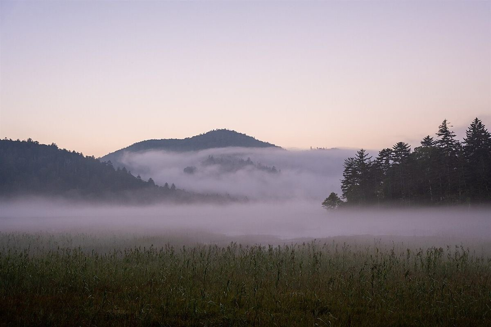
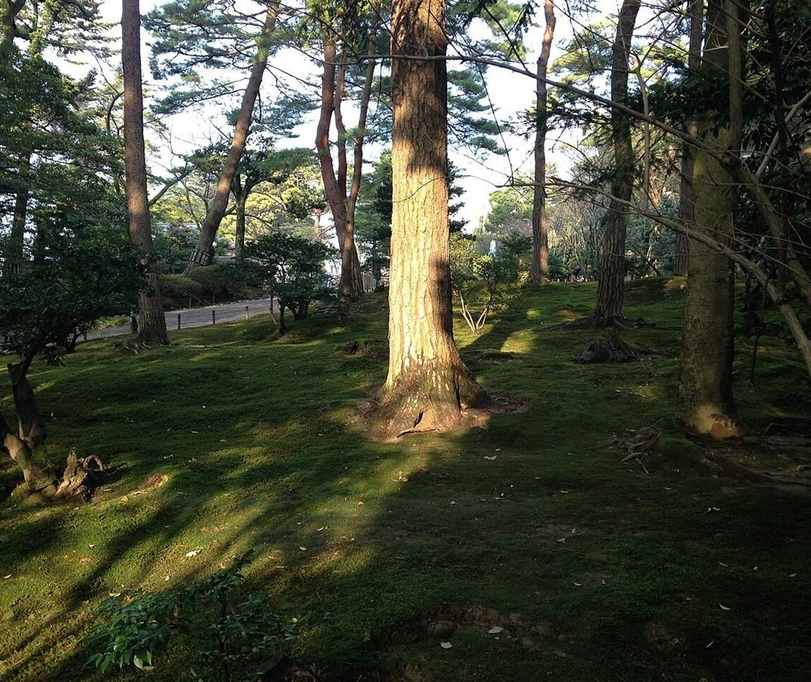
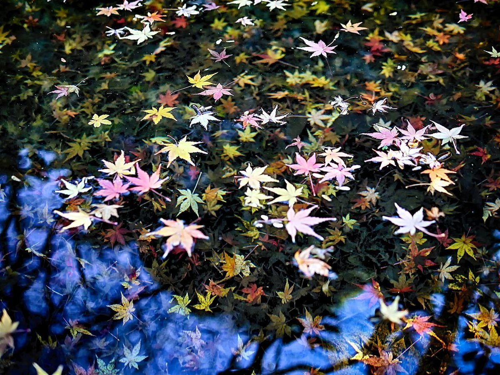

gallery茶房 な〜や
このサイトについて
このページは、gallery茶房 な〜やの紹介ページとして作成した営業用の試作サンプルです。営業時間・料金・メニューなどの情報は準備中です。実際の内容はお店へお問い合わせください。



gallery茶房 な〜や
このページは、gallery茶房 な〜やの紹介ページとして作成した営業用の試作サンプルです。営業時間・料金・メニューなどの情報は準備中です。実際の内容はお店へお問い合わせください。


掲載写真はフリー素材のイメージ写真で、店舗の実際の様子ではありません。他地域で撮影されたもの、撮影地が不明なものを含みます。
電話する 090-8287-0414